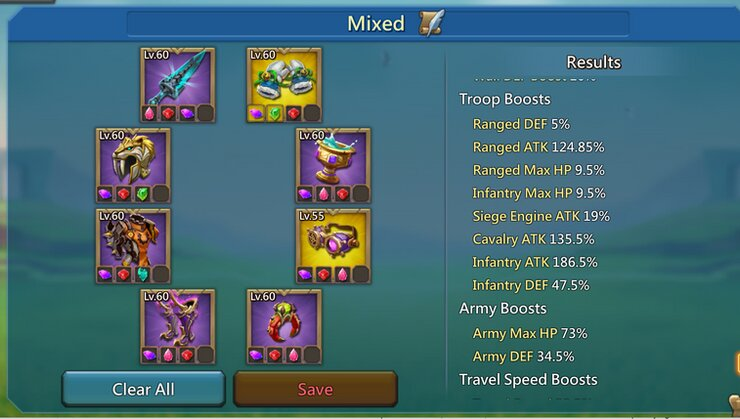
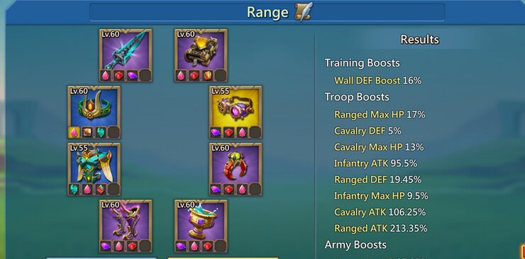
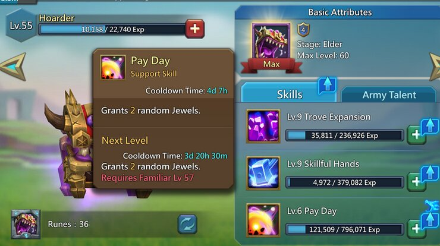

The game doesn't tell you how to prioritize gear, all it tells you is that orange is better than grey. There's no walk through option, there's no tutorial or help button to show what you should look at upgrading first, or crafting first. Now it's all up to your preference, of course. What I want to craft first can be different than what you want to craft first, but generally the basics will always be the same.
When you're looking at building a set, this section of your Workshop will be your best friend. It allows you to filter by piece, and by bonus on the items - giving you the ability to filter through boosts like over all Attack Boost, Infantry attack boost, Research Speed, and so on and so forth. This is crucial, because there's a couple of sets of gear you want to work on before you do anything. Literally in this order
Research Gear
Mixed / Defense Gear
Monster Gear
Spear Gear
Research gear is crucial to reducing researches down from over a thousand days to a more reasonable number, like 650 days. Feel free to gift me those speeds I saved you.
Now let's see how it looks with some Research Gear
You might not think of it at first, because researches aren't more than a few days for a while, but it gets rough, you want that extra boost, to save you on your boosts.
We saved over 100 days, just by changing our gear..and having decent research gear!
Your mixed gear , also commonly know as war gear or defense gear, is what you're going to generally be wearing when you're offline, or taking a rally hit. Why is this so important to work on you ask? Well, there's a simple reason, this is a war game, you will be attacked at one point or another, or another, or another or another. This is a close priority right behind your Research set, and it's important that you check your stats to make your Mixed Set work the best. Generally everyone will have the same, but there will be variations at times, and there are "best pieces" but those are typically champion gear pieces, which will cost you big money.

This is what a basic mixed set looks like. Notice the stat boosts are generally equal across the board. Again, the reason for this is that this is the set you're going to put on before a rally hits you, you typically won't have enough time to look at what's coming, change talents and change into your spear (Single troop type) set, so it's best to sit in this. Now if you do have that much time, great, go get that counter - but typically you won't.
Spear Gear
Noticed how I skipped Monster Gear? It's pretty self explanatory, and there's not much room for error. As far as spears go, this is where it gets tricky and kind of expensive, unless you're patient and just wait for monster items. There are three troop types, Infantry Cavalry and Ranged, they all coincide with their respective heros, and then respective spear sets. Your talents, hero boosts and gear will all add up to much higher numbers for a "Spear" as it's typically referred to, in order to better punch through the enemy forces.
This is a basic range spear, notice how most of those items are the same as the mixed set? Usually they'll tie together. However, if you're focusing on a spear before your mixed gear, you will be easier to counter, since some of the spear pieces are Ranged pieces, the enemy will know that and know to hit you with Infantry.
Bottom Line on Gear:
Use the filters in the workshop to find the best gear you can make, always intend on getting something to Mythic, and always make pieces that are the best available to you on your play style and your budget. Don't make a bunch of grey and green Champion pieces if you're never going to buy a champion pack.
Jewels!!
Jewels are just as important as gear, in a sense they make the gear! The right Jewels can turn an okay Infantry piece into a fantastic mixed piece, if done right, which is easy to do!
First things first, stop looking at defense and trap jewels. They don't serve any purpose at this point in the game. With the addition of T5, traps and wall defense aren't a real thing. Next, stop putting grey and green jewels into your gear, unless you have the Chisels to remove them, just wait until they're blue, where the bonus is more noticeable. Unless you're trying to squeeze some stats from them, you're not going to nice it from a green Jewel.
Ideally we all want Legendary Jewels in our gear, and that's the end game goal, but unless you're going to buy them whenever they're in the shop, it's going to take a while.
The hoarder familiar skill is useful to try to get some free jewels, but it is entirely Random, and you WILL get defense and trap jewels, just brush it off and try again when it resets. I would not suggest making maxing Hoarder a priority, there are much better Familiars out there to start out with. However with that said, free Jewels are free Jewels.
Recap
None of this will be perfected over night, or over a week, maybe within a month, but all these things take time to get set up. A lot of the gear takes a lot of materials that won't come quickly unless you're buying a lot of packs, once you look at going to Mythic level, the embers are few and far between as well. All the more reason to focus on your sets in order, and prioritize them how you play.